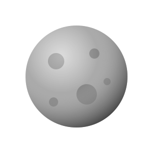
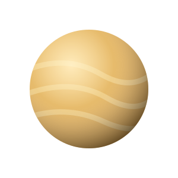
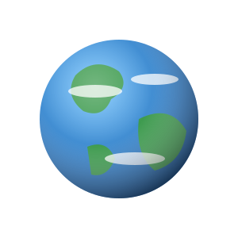
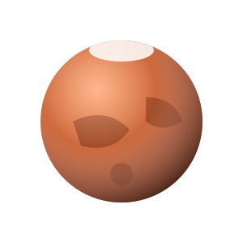
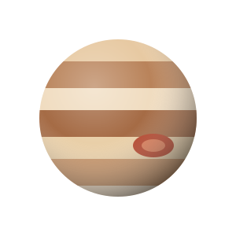
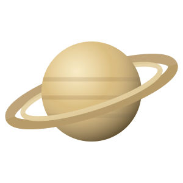
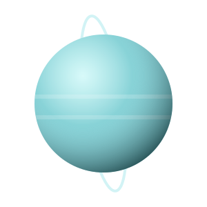

Mercúrio
O menor planeta e o mais próximo do Sol. Um ano em Mercúrio dura apenas 88 dias terrestres.
Uma viagem pelos oito planetas que giram ao redor do Sol. Explore, descubra curiosidades e depois teste o que aprendeu no nosso quiz!
Responder o Quiz Explorar os planetasPasse o mouse sobre cada planeta para vê-lo de perto.

O menor planeta e o mais próximo do Sol. Um ano em Mercúrio dura apenas 88 dias terrestres.

Atmosfera densa de gás carbônico que prende o calor: cerca de 465 °C na superfície. Gira ao contrário da maioria dos planetas.

O único mundo conhecido com vida. Cerca de 71% da superfície é coberta por água.

O óxido de ferro (ferrugem) dá a cor avermelhada. Abriga o Monte Olimpo, o maior vulcão conhecido do Sistema Solar.

O gigante do Sistema Solar: sua massa é maior que a de todos os outros planetas juntos. A Grande Mancha Vermelha é uma tempestade gigante.

Famoso por seus anéis de gelo e rocha. É tão pouco denso que, em teoria, flutuaria na água.

Gira praticamente "deitado", com eixo inclinado cerca de 98°. É um gigante de gelo de cor azul-esverdeada.
O planeta mais distante do Sol. Tem os ventos mais rápidos do Sistema Solar, passando de 2.000 km/h.
Alguns números que mostram o tamanho do nosso Sistema Solar.
São 8 perguntas com 4 alternativas cada. Responda, veja seu resultado e descubra como os outros visitantes responderam.
Começar o Quiz